01
Homepage · delivered-meals card
A practical office-catering image. The 768 px source works best at service-card size.
Current photo
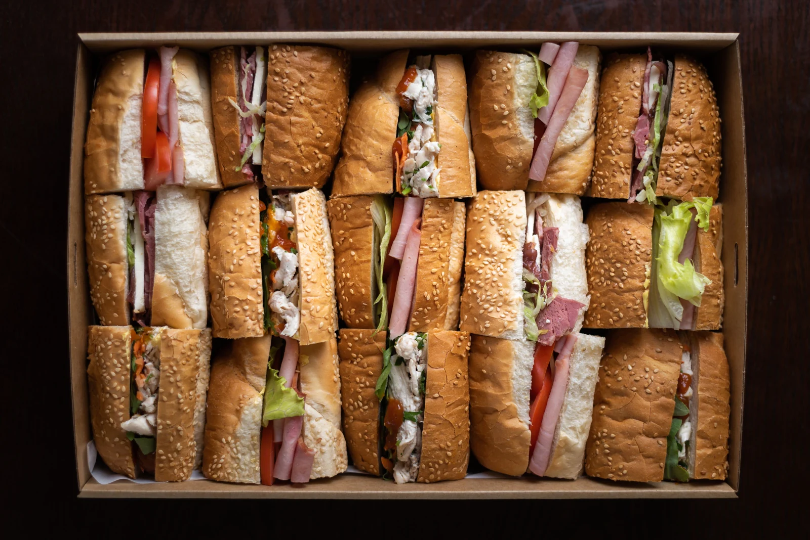
A MORE COHESIVE CATERING STORY
Compare proposed placements with the current photos, then browse all 33 images across your two uploads.
THE RECOMMENDED CHANGES
A practical office-catering image. The 768 px source works best at service-card size.
Current photo

Make the catered breakfast format clearer while keeping the homepage hero unchanged.
Current photo
The strongest fit for individual meals. Final placement should crop some of the empty background without cutting off the tray.
Current photo
Use wraps and a salad to reduce repeated sandwich imagery. These are supporting options, not a fixed meal package.
Current photo
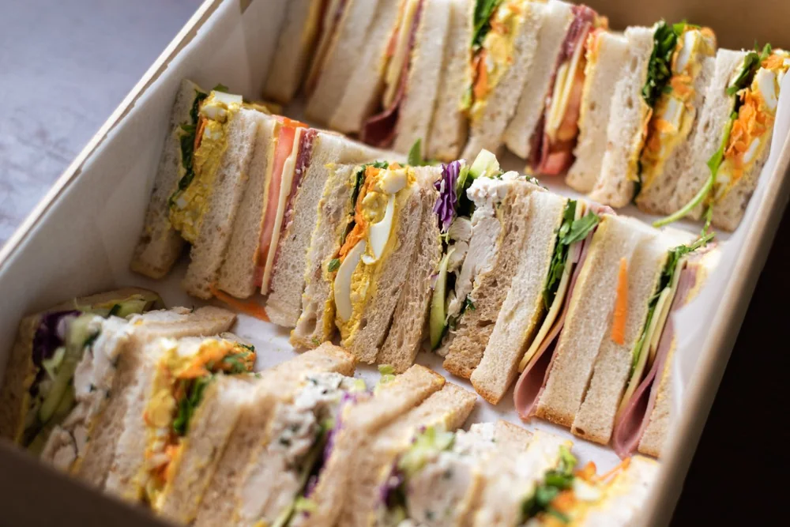
Suggested option · 21

Wraps Platter.jpg
Introduce a different breakfast format so the croissant image is not repeated across the site.
Current photo

Keep the current station image as the lead. Add one compact board as a supporting image; use the other only in a distinct menu placement.
Current lead · keep

Supporting option · 05

Cheese & Charcuterie Platter.jpg
The cocktail close-up is the first choice; the bartender is an alternative. Keep juice or another nonalcoholic image in the service story.
Current photo

KEEP THE ATMOSPHERE
The new platter images add product clarity. These existing photos keep the hospitality, people, and setting in the story.
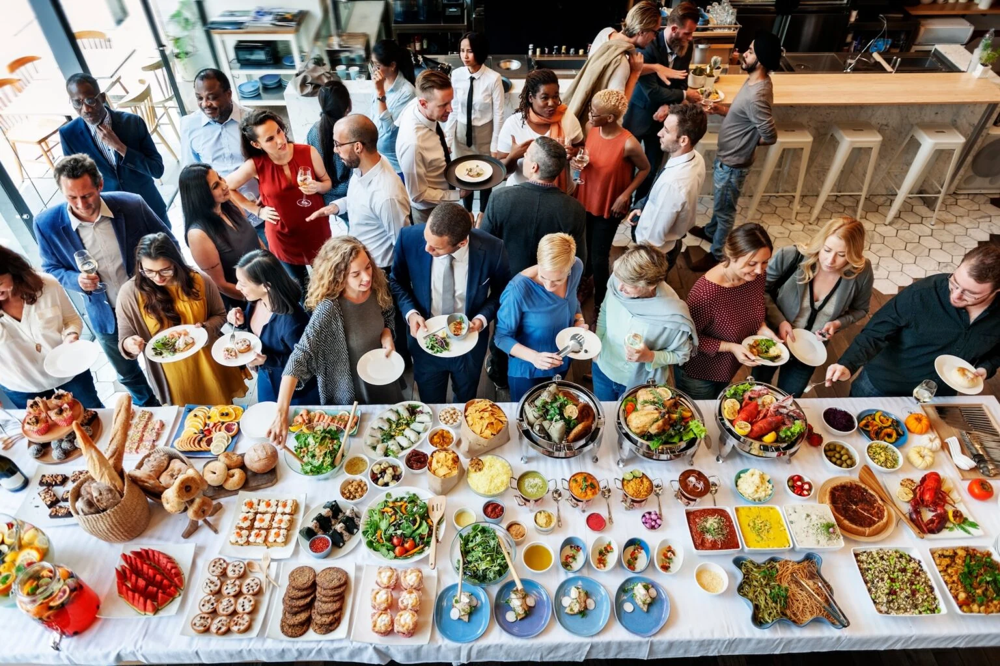
NEW COLLECTION · BOX PHOTOS.ZIP
Twelve new options, numbered B01–B12. These are strongest as dish-specific menu images, with a wide shared-platter option for corporate catering. They are review suggestions; the main website and menu names have not been changed.
The new wide image shows the food formats more clearly. Keep the corporate people photo as the lead or elsewhere on the page.
Current photo
The danishes and banana/chocolate bread now have direct matches to your supplied menu. Muffins, B03, complete a consistent breakfast group.
Current photo
Caprese and pulled pork sliders add dish-specific options rather than another generic sandwich image.
Current photo
ALL 12 NEW UPLOADS
Tap any image to view it larger. Dimensions below refer to the original source files.
4 boxed lunch.jpg
3072 × 1727 px source
Corporate catering · supporting wide photo
A strong, high-resolution overview of shared catering trays. Keep the current people photo for human context. Although the filename says “4 boxed lunch,” the image shows shared platters, not four individual lunch boxes.
Assorted danishes.jpg
1600 × 1067 px source
Homepage meeting card · breakfast menu
A strong alternative to the earlier croissant suggestion: it directly matches the approved assorted-danishes selection.
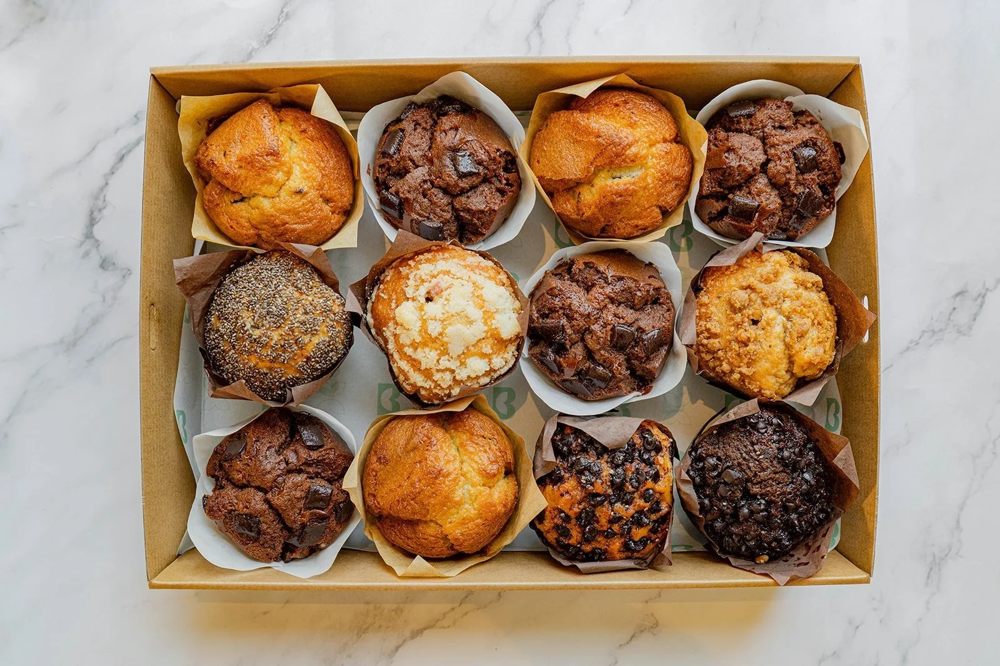
Assorted muffins.jpg
1600 × 1067 px source
Breakfast sample menu
Use beside the assorted-danishes and banana-bread photos to create a consistent breakfast selection.
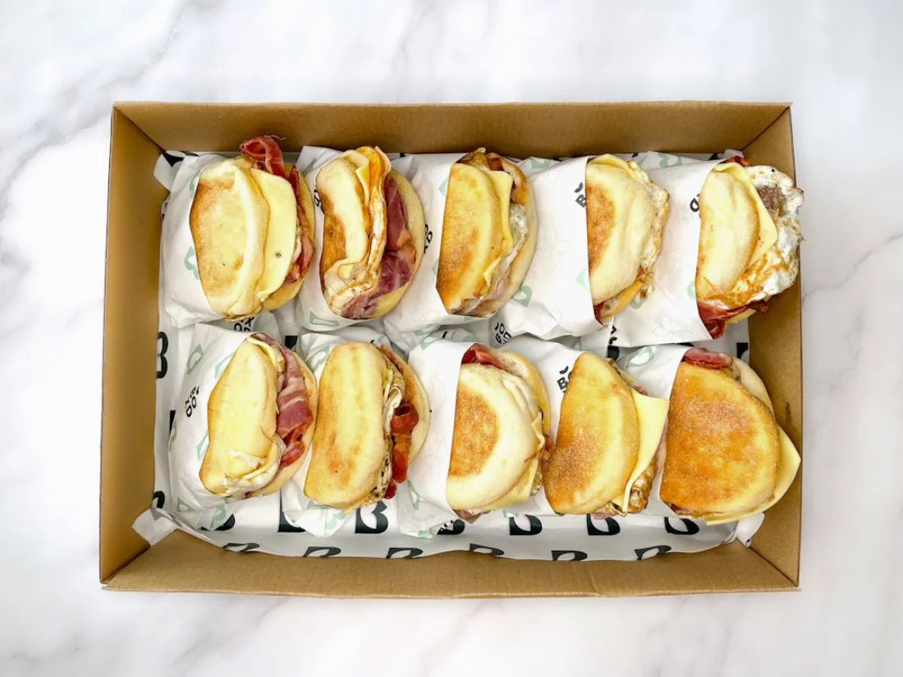
Bacon, Egg & Cheese English Muffin.jpeg
1100 × 825 px source
Hot breakfast / meeting menu
A useful breakfast-sandwich option. Confirm bacon, egg and cheese on an English muffin is the named selection offered before adding it to the menu.
Caprese Slider.jpg
1600 × 1067 px source
Sliders / corporate-lunch menu
A direct visual match for the approved Caprese slider. Better for a dish-specific menu card than a broad homepage hero.
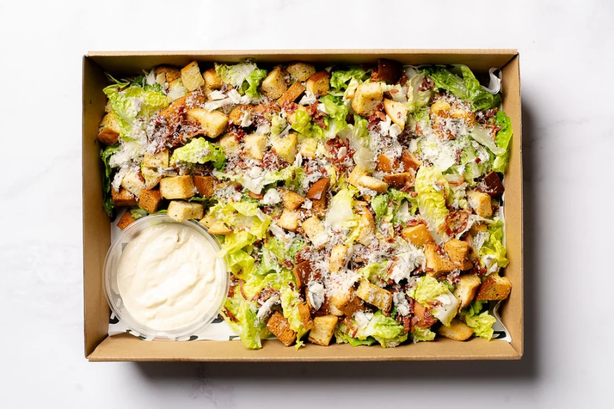
Cesar Salad.jpg
1100 × 733 px source
Corporate-lunch salad menu
A direct match for the approved Caesar salad. Display the corrected dish spelling while retaining the original source filename.
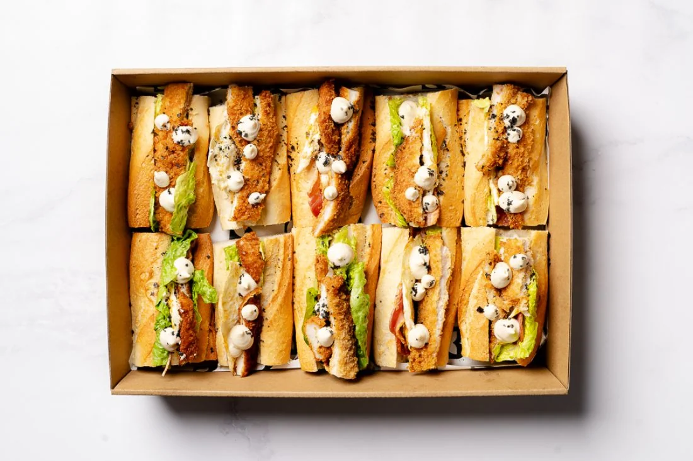
Chicken, bacon, lettuce, fried egg & Caesar dressing.jpg
1100 × 733 px source
Sandwich / corporate-lunch menu
A direct visual for the chicken, bacon, lettuce, fried egg and Caesar dressing selection. Useful for making the menu more specific.
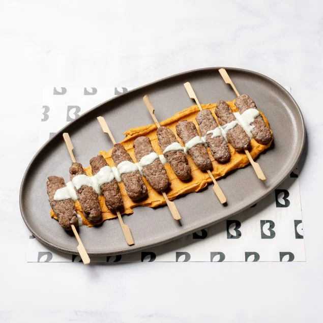
Kofta.jpeg
635 × 635 px source
Kofta · small menu card only
Matches the approved Kofta selection. The 635 px source is suitable for a small supporting card; avoid a large hero or heavy crop.
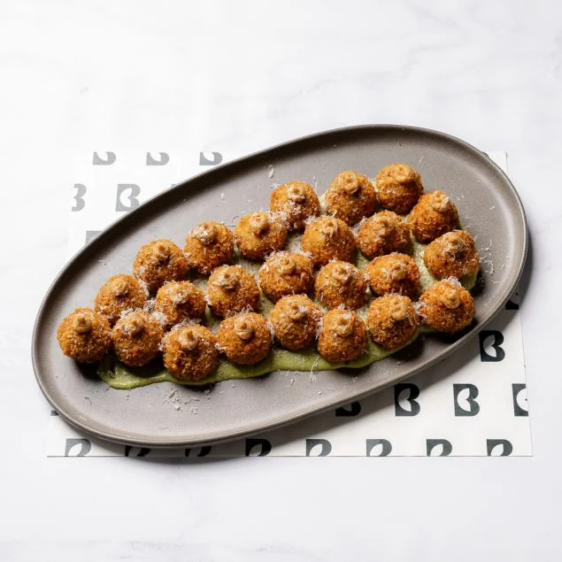
Lamb Meatballs.jpeg
635 × 635 px source
Lamb meatballs · small menu card only
Matches the approved lamb meatballs selection. Keep this at a modest display size; the source is 635 px.
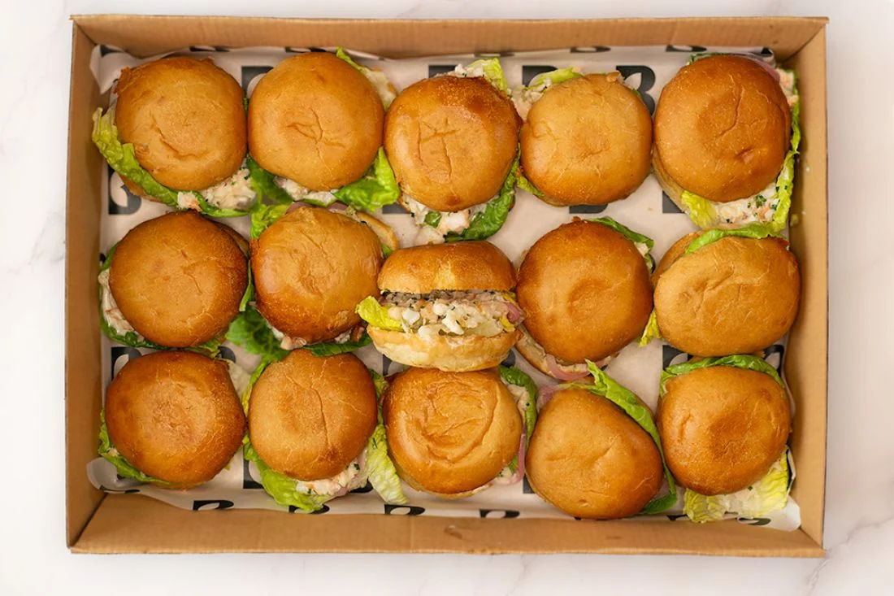
Mini Crab & Prawn Slider.jpg
1100 × 733 px source
Seafood slider menu
Use the full crab-and-prawn description if accurate. The current menu says mini crab slider; confirm the naming before changing that menu text.
Pulled Pork Slider.jpg
1600 × 1067 px source
Delivered meals / slider menu
A direct visual match for the approved pulled pork slider, and a useful alternative to repeating sandwich platters.
banana & chocolate bread served with whipped walnut butter.jpg
1100 × 733 px source
Breakfast / meeting-break menu
An especially useful match for banana and chocolate bread with whipped walnut butter. Complements the danishes and muffins.
Some liners show printed marks. Confirm that any visible packaging branding is appropriate before final website use. These uploads are not automatically identified as Southern Crescent client events or original photography.
ORIGINAL FEED COLLECTION
Numbers match the suggestions above. Tap any image to view it larger.
21 photos
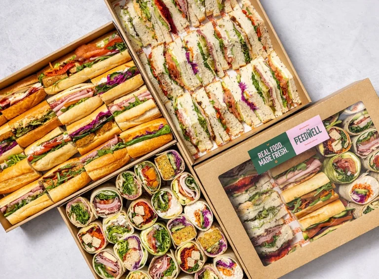
768 × 566 px
Leave out
The FEEDWELL branding is prominent. Keep Southern Crescent’s own presentation consistent.
1680 × 1680 px
Beverage hero alternative
An active service scene. An alternative to the cocktail close-up; not an additional photo of Southern Crescent staff.
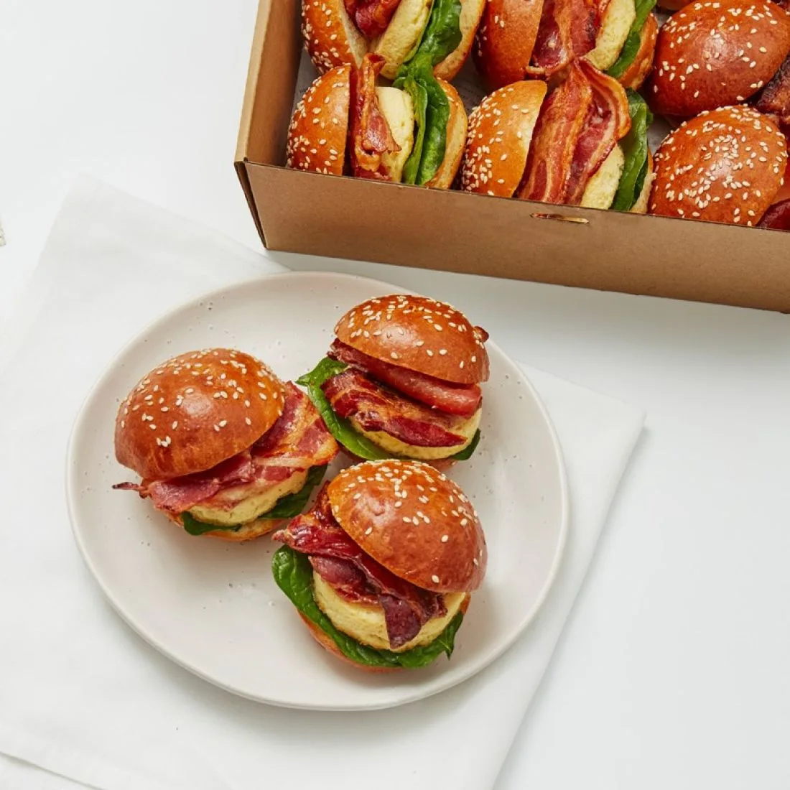
1100 × 1100 px
Slider / meeting menu
A clean slider presentation for a menu detail. Confirm the pictured selection matches the dish description.
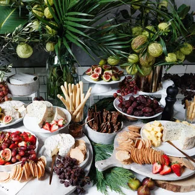
324 × 324 px
Too small for a prominent placement
324 × 324 px. Avoid a hero or large service card; a larger original would be needed.
1024 × 794 px
Charcuterie supporting image
A compact cheese and charcuterie box. Add alongside the current grazing-station lead photo.
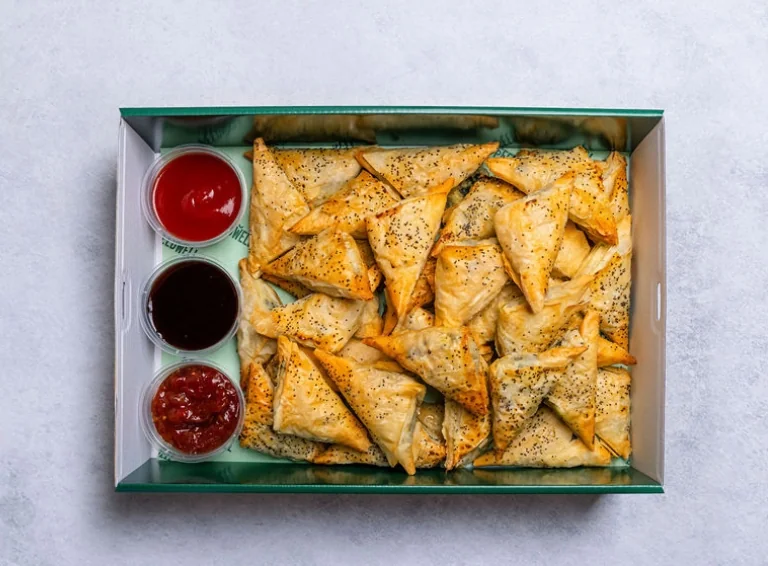
768 × 566 px
Reception menu detail
A tidy pastry platter. Use if this item is part of the approved offering; it is not yet listed in the supplied menu.
1887 × 1887 px
Homepage meeting-catering card
A clear breakfast presentation and a high-resolution source. Replaces the current fruit-and-pastry close-up.
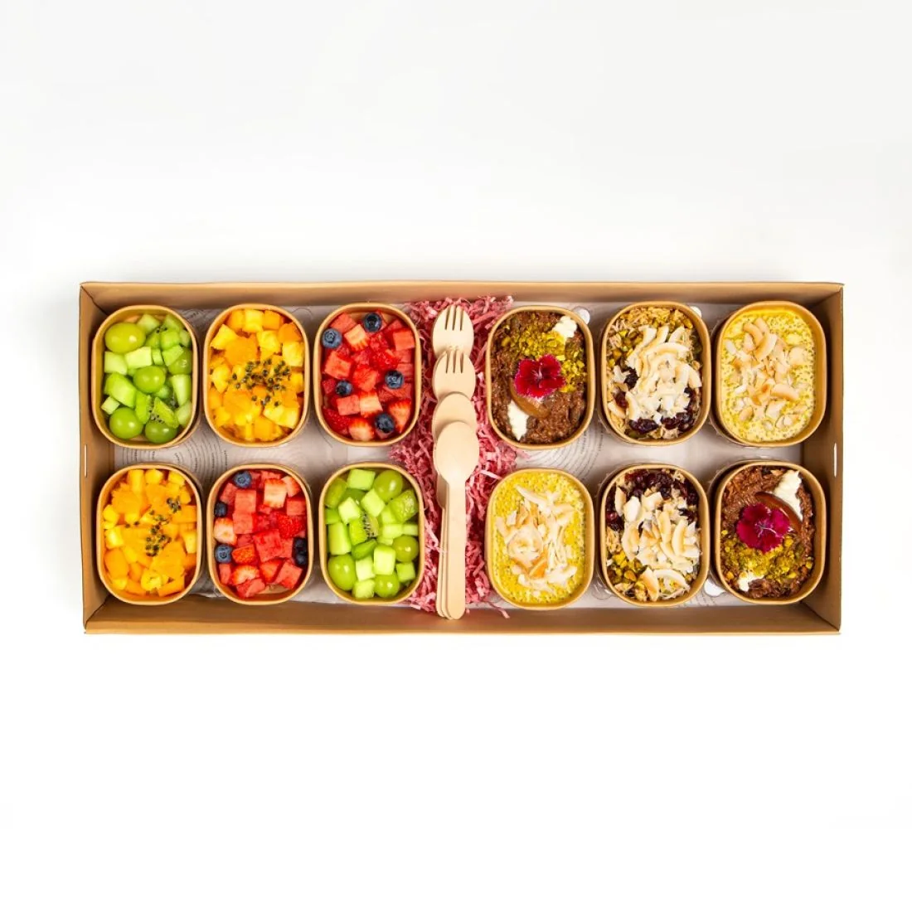
1100 × 1100 px
Breakfast menu detail
Shows individual toppings and a breakfast format. Better as a supporting image than a large banner.
1024 × 801 px
Grazing supporting image
An alternative compact board presentation. Use a separate location from the cheese-and-charcuterie box to avoid repetition.
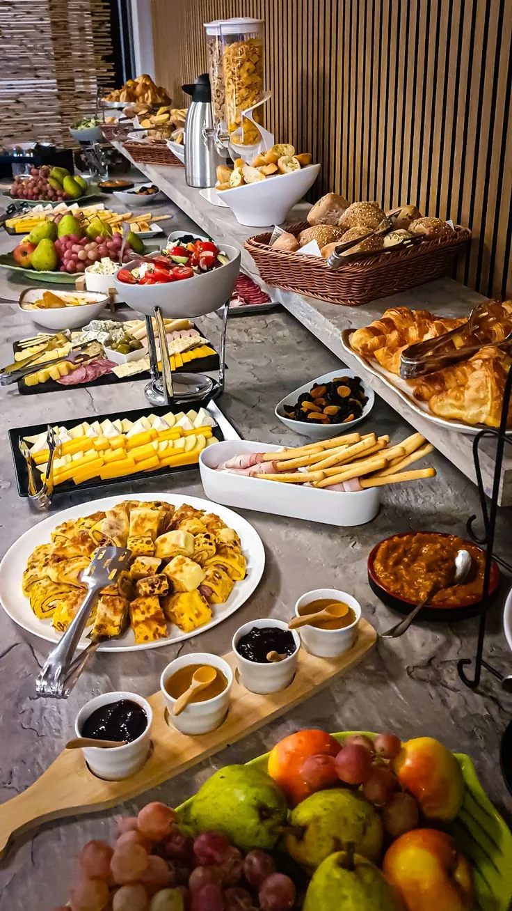
736 × 1308 px
Keep as a backup
Tall, busy buffet composition. Less consistent with the clean platter series and awkward for wide crops.
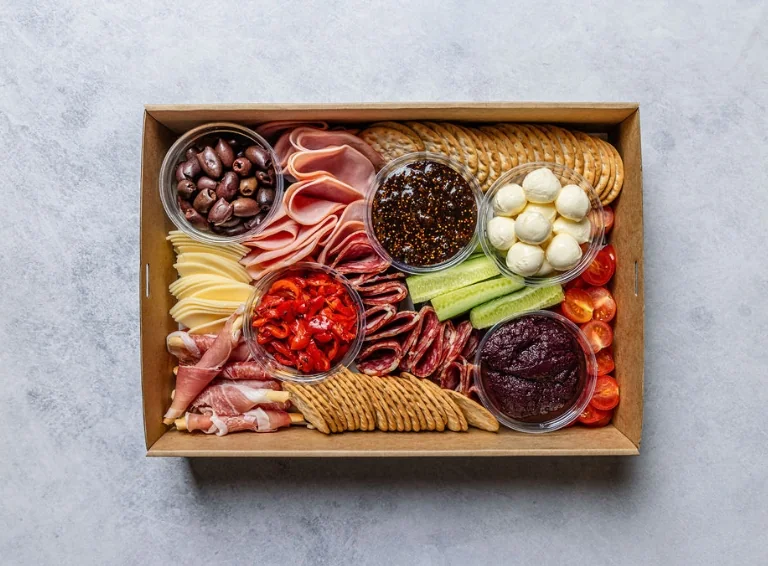
768 × 566 px
Antipasto menu detail
A useful supporting option for grazing or shared meals, if this selection is offered.
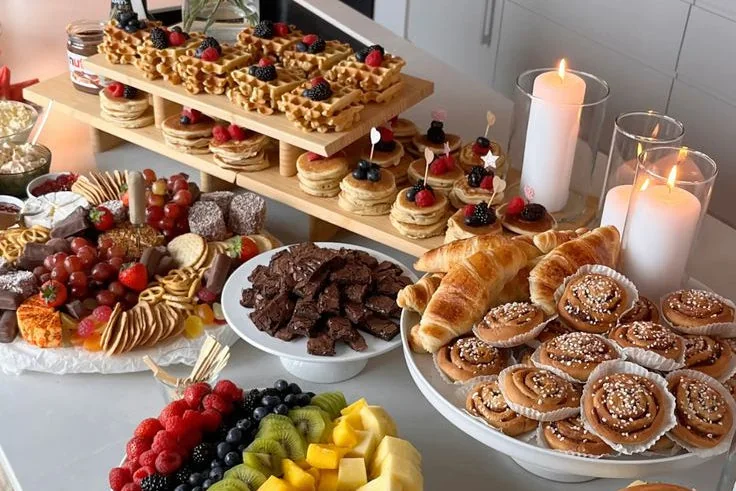
736 × 491 px
Keep as a backup
A warm event spread, but busy and lower-resolution. The current hero and event images provide clearer context.
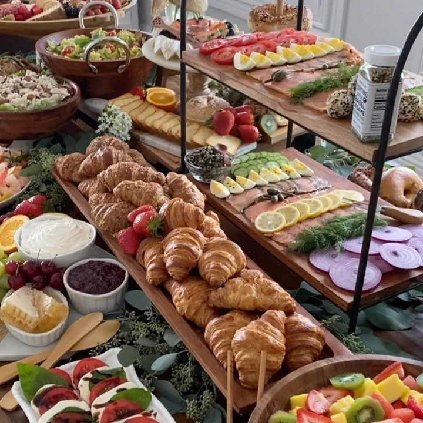
720 × 720 px
Keep as a backup
Shows an abundant spread, but the lighting and crowded composition are less consistent with the platter series.
768 × 566 px
Delivered catering supporting image
A salad option adds variety alongside sandwiches and wraps. Confirm the pictured dish is offered before naming it on the website.
768 × 566 px
Menus breakfast photo
Adds a recognizable breakfast format without repeating the croissant photo on the homepage.
1887 × 1887 px
Delivered catering lead photo
The strongest replacement: an individual sandwich meal makes the boxed-meal offer easy to understand.
2667 × 2667 px
Beverage lead photo
A detailed service moment with a strong source resolution. Keep the dry-hire service wording and nonalcoholic context elsewhere.
768 × 566 px
Homepage delivered-meals card
A clean sandwich platter that immediately reads as office catering. Best in a card-sized placement.
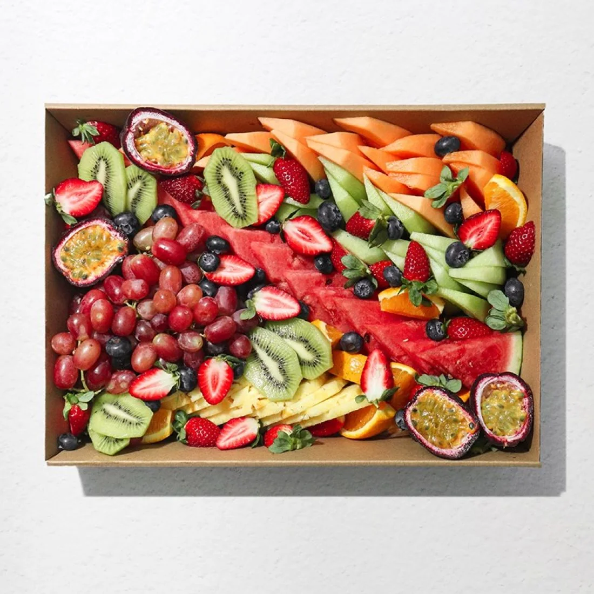
1100 × 1100 px
Breakfast / meeting supporting image
The stronger-resolution fruit-only option. Useful alongside pastries; avoid duplicating the similar fruit photo.
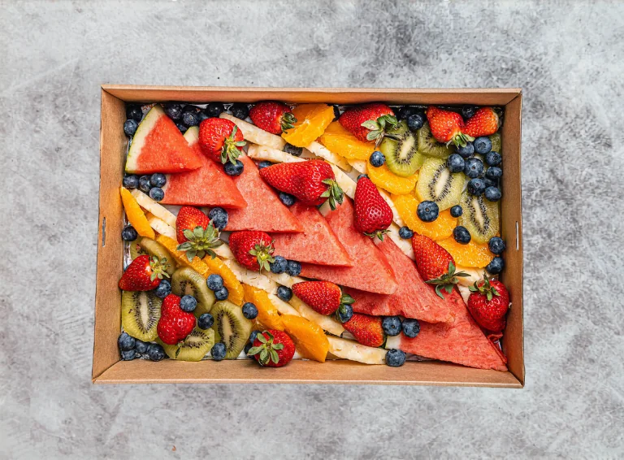
768 × 566 px
Fruit-platter alternative
A closer fruit composition for a small card. Choose this or the other fruit photo rather than using both together.
768 × 566 px
Delivered catering supporting image
Adds wraps to the delivered-meals story and replaces another repeated sandwich image.
Photos supplied in Feed.zip. This review does not establish image ownership or identify the images as Southern Crescent client events. The FEEDWELL-branded image is marked separately.